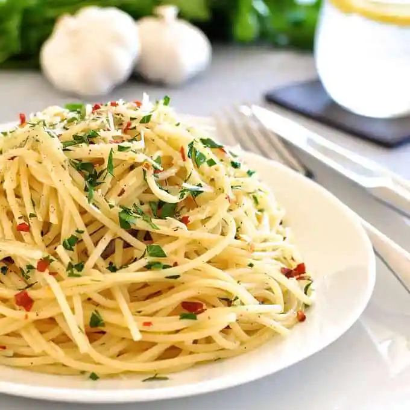

Pasta with Olive Oil and Garlic

Recipe Description
Simple pasta recipe with olive oil and garlic
Ingredients:
- Pasta
- 10 Garlic cloves
- Olive oil
- Chilli flakes
- Chopped parley
Process:
- Cook 1lb/500g of dried spaghetti (or any other long dried pasta) in a large pot of salted boiling water per packet MINUS 1 minute.
- Cook 1lb/500g of dried spaghetti (or any other long dried pasta) in a large pot of salted boiling water per packet MINUS 1 minute.
- Add pasta into chosen sauce with 3/4 cup pasta cooking water. Toss pasta until sauce thickens and sticks to pasta (called "emulsifying" the sauce), 1 - 2 minutes. Use more pasta water if needed to loosen sauce.
- Heat oil over medium high heat. Add garlic and cook until golden - be careful not to burn it.
- Toss with pasta and cooking water per Base Directions. Toss through parsley and chilli flakes, serve with parmesan.